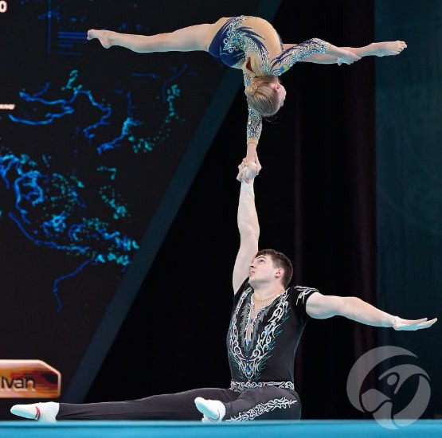
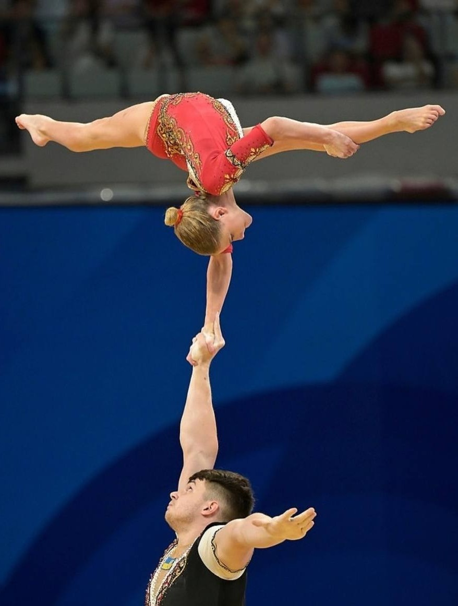
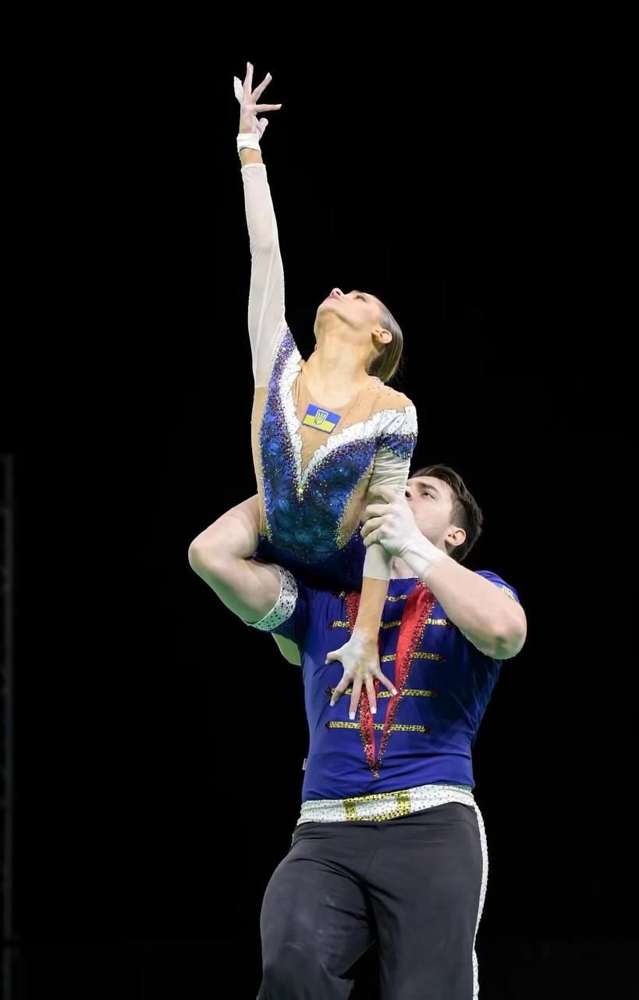
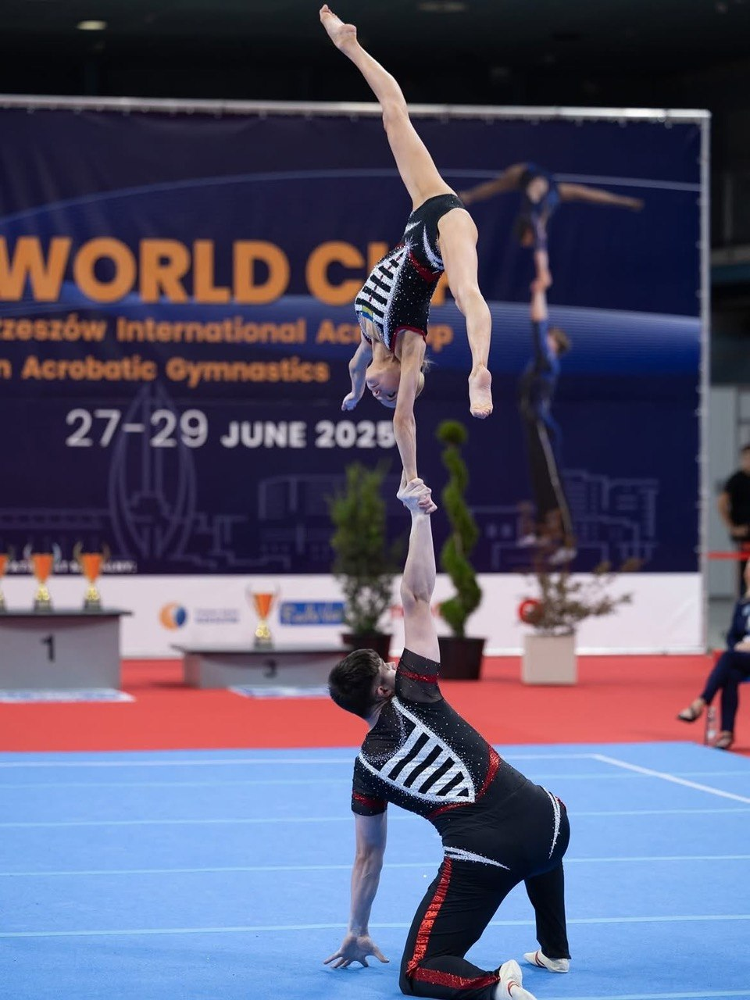

сила
Способность создавать, удерживать и направлять усилие, сохраняя стабильность тела и контроль движения.
Ivan Labunets / Condition / Handstands
Акробатическая ОФП и физическая база для стоек на руках. Мы развиваем силу, выносливость и баланс — основу стабильного прогресса. Поэтапно, последовательно и без лишней гонки.

Офп
Бег, вращения суставов, несколько скручиваний и пара отжиманий лишь разогревают тело, но не готовят его к длительной нагрузке. Системный блок ОФП и СФП развивает все физические качества, укрепляет слабые места и формирует основу, из которой мы можем развиваться в любом спортивном направлении.
Способность создавать, удерживать и направлять усилие, сохраняя стабильность тела и контроль движения.
Способность сохранять качество и эффективность движений на протяжении необходимого объёма работы.
Способность согласовывать работу частей тела и точно управлять положением, ритмом и траекторией движения.
Активный и контролируемый диапазон движения, позволяющий безопасно осваивать новые положения и технические элементы.
Способность быстро создавать и передавать усилие в динамике без потери точности и контроля.
Работа с акробатической базой развивает широкий спектр навыков, необходимых для стоек на руках и темповых элементов: контроль тела, опору, координацию, силу и пространственную ориентацию. В дальнейшем эту подготовку можно переносить на воздушные полотна, гимнастические кольца, цирковые ремни и брусья, а также использовать в смежных дисциплинах — спортивной и художественной гимнастике, чирлидинге и спортивной аэробике.
Постепенная нагрузка, сила и выносливость опоры — чтобы балансировать без постоянного дискомфорта.
Сила, подвижность и стабильность под весом собственного тела.
Контроль нейтрали: спина не ломается, а таз не выпадает из линии.
Hollow, компрессия и связь рёбер с тазом удерживают стойку собранной.
Тонус ягодиц и ног завершает линию и передаёт усилие через всё тело.
Плечи, складка и шпагаты как сила в амплитуде — для новых входов и положений.
condition — подготовка к стойкам
Подкачка — это фундамент для изучения новых элементов. Системная работа над силой, выносливостью, мобильностью и контролем помогает закрыть слабые места, подготовить тело к нагрузке и сделать освоение техники более стабильным и безопасным. ОФП и СФП создают физическую базу, благодаря которой стойки и другие акробатические элементы осваиваются увереннее, а дальнейший прогресс не упирается в дефицит выносливости.
Метод
Тренировки проходят в онлайн-режиме под руководством тренера. В процессе мы выполняем необходимые комплексы ОФП и СФП, позволяющие освоить стойку на руках и другие акробатические элементы по индивидуальным запросам.
Комплекс базовых упражнений, чтобы подготовить тело к основной тренировке.
Упражнения на все группы мышц в статике и динамике, после которых мы переходим к упражнениям, ведущим к стойкам на руках.
Работа со стойками, различными вариациями и подводящими упражнениями.
Программы
Тренировки проходят онлайн на платформе Zoom. Время занятий указано по Варшаве (CET/CEST). Для занятий понадобится всего лишь пространство размером с коврик для йоги, немного свободной стены и желание тренироваться.
На выбор доступны три абонемента.
Продуктивный час работы над всеми группами мышц: развитие силы и выносливости, мобильности и физического фундамента для стойки на руках.
Работа над подводящими упражнениями для стойки на руках, углов и упоров. Практика стоек, их вариаций и свободного баланса.
Комплексный формат для тех, кто хочет одновременно развивать силу, мощность, выносливость и осваивать стойку на руках. ОФП и СФП работают как единая система. В абонемент также входит практика активной растяжки и стретчинга всего тела — для развития мобильности плеч, таза и ног, выполнения подводящих упражнений и построения более чистой вертикали с учётом особенностей тела.
Помимо групповых программ доступны индивидуальные и сплит-тренировки с тренером. Это возможность точечно разобрать ваш запрос, скорректировать программу и выбрать удобное время занятий.
Приватные занятия с тренером, выстроенные под конкретный запрос, уровень подготовки и цели. Гибкий выбор времени. Продолжительность тренировки — 60 минут.
Тренировки для небольшой группы со схожими целями и уровнем подготовки. Программа и время согласовываются с участниками.
* Для владельцев активного абонемента All-in-One количество индивидуальных тренировок по специальной цене 20 € не ограничено.
* Для владельцев активного абонемента школы хендстенда SinY количество индивидуальных тренировок по специальной цене 20 € не ограничено. У меня есть активный абонемент SinY
Результаты



Диагностика
Не обязательна идеальная стойка. Несколько контрольных упражнений помогают определить текущий уровень ОФП и подкачки и понять, чего не хватает: силы, выносливости, контроля корпуса или взрывной мощности.
Встречные складки, подъёмы в лодочку, лодочка-качалочка и встречные в группировку.
Подъёмы верхней части корпуса, подъёмы ног, малая и большая лодочка, лодочка-качалочка.
Отжимания обычным хватом, короткие отжимания, переходы из низкого упора в планку с удержанием низкого упора лёжа.
Приседания, приседания с прыжком и выпрыгивания из глубокого седа.
Обо мне
Более 14 лет я занимаюсь спортивной акробатикой под руководством заслуженного тренера Украины Галины Николаевны Синявской. Я спортсмен национальной сборной Украины и тренер по ОФП и стойкам на руках в SinY.
Заслуженный мастер спорта Украины, атлет World Gymnastics и чемпион Всемирных игр 2025.
Мой подход — сначала подготовить тело к элементу: развить силу, гибкость, выносливость и контроль, а затем выстраивать технику стойки. Подкачка здесь не набор случайных упражнений, а понятная система с прогрессией под ваш уровень и цели. На тренировках вы понимаете задачу каждого движения, получаете точные корректировки и последовательно идёте от надёжной базы к уверенной стойке и вашим индивидуальным целям.
золото Всемирные Игры, Чэнду (Китай)
заслуженный мастер спорта Украины
ОФП и СФП формируют базу для стойки на руках и работы над индивидуальными целями